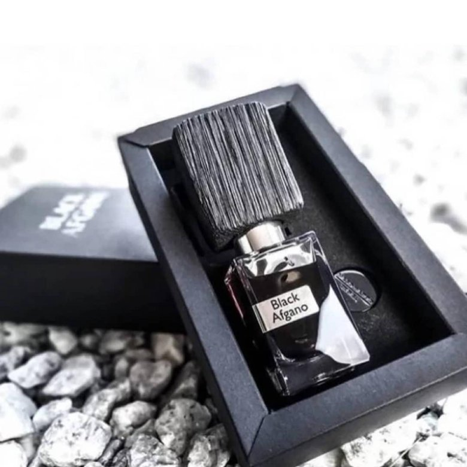

PARFIMITI.BY
Black Afgano
Цена:
426р.-30мл.
Описание
Black Afgano Nasomatto — это аромат для мужчин и женщин, он принадлежит к группе древесные фужерные.
Парфюмер: Alessandro Gualtieri.
Верхние ноты: Конопля и Зеленые ноты.
Средние ноты: Cмолы, Древесные ноты, Табак и Кофе.
Базовые ноты: Уд и Ладан.
Подробное описание
Унисекс-аромат от Nasomatto Black Afgano - аромат, созданный Алессандро Гальтьери (Alessandro Gualtieri), отражающий особое видение восточного парфюма, комбинирующий в себе аккорды психоделических цветов и мотивов. Nasomatto Black Afgano - аромат расширяет границы создания, заставляя по-новому воспринимать окружающий мир, придавая ему яркие и удивительно резкие очертания. Парфюм словно переносит в жаркую пустыню, где солнце нещадно палит, а песчаные дюны навевают мысли о недавних бурях. И вот долгожданный оазис, который пьянит и одурманивает... Композиция парфюма представлена в виде сочетания аромата кофе, конопли и кожи с удивительным и мистическим запахом дерева уд. Наверное, сложно найти какие-либо другие духи, которые бы так точно воссоздавали образ Востока.
Характеристика товара
| Сезон | осень |
|---|---|
| Стойкость | 84% |
| Сделано в | Италии |